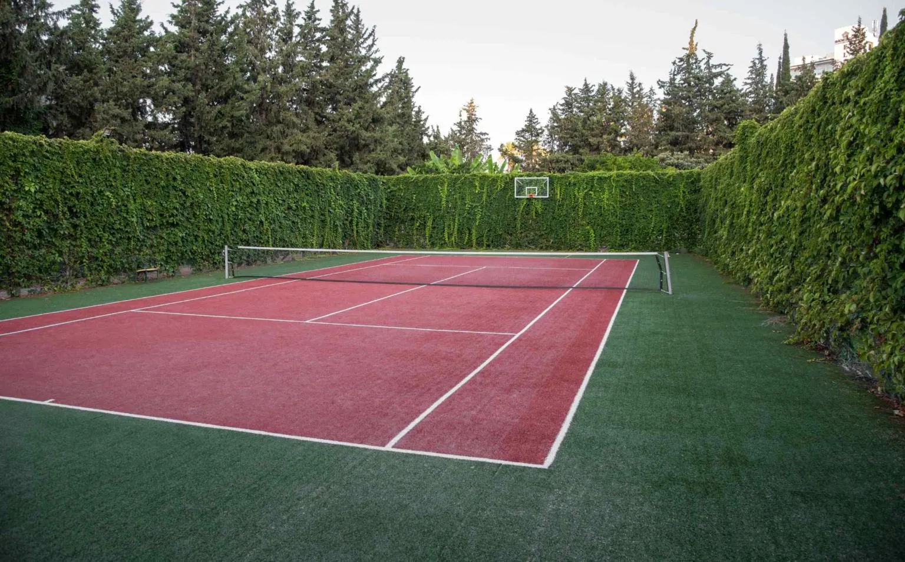
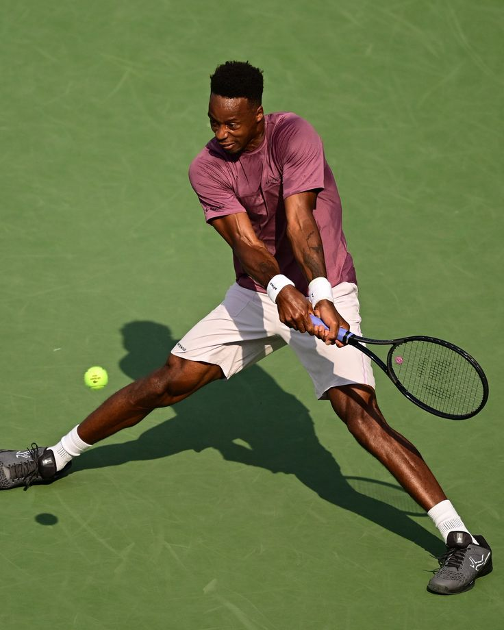
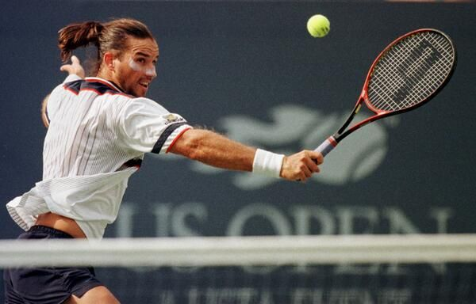

Les surfaces
Gazon, terre battue et dur. Chaque surface change le rebond et la stratégie.
Technique, stratégie et rythme.
Comprendre le jeu
Le tennis oppose deux joueurs ou deux équipes. Chaque échange est un duel entre puissance, placement et anticipation.

Gazon, terre battue et dur. Chaque surface change le rebond et la stratégie.
Une alternance entre défense et attaque, parfois en un seul coup.
La gestion des moments clés fait la différence entre victoire et défaite.
Service, revers, volée : les signatures techniques du tennis.


